LoRA Style & Prompt Control Guide
Complete operational manual for generating custom artwork with the jeff_sketch style LoRA model weight. Covers density calibration, photo-to-sketch transformation, original drawing colorization, and exact prompt vocabulary.
Signature Master Blueprint: Geometric Coif & Stark Minimal Line Art
The Exact Signature Style Definition:
"A minimalist line-art illustration of a [SUBJECT] against a pure white background. The features of the central subject are stark white, defined only by clean, minimal black outlines and solid black features, with zero shading or grey tones. A massive, elaborate coif or head-piece is formed by interwoven, interlocking, zig-zagging geometric bands or ribbons. These bands are filled with flat, solid, unshaded colors of red, blue, green, and yellow. There are no outlines on the interior colored shapes. The entire image is high-contrast, clean, and flat-design."
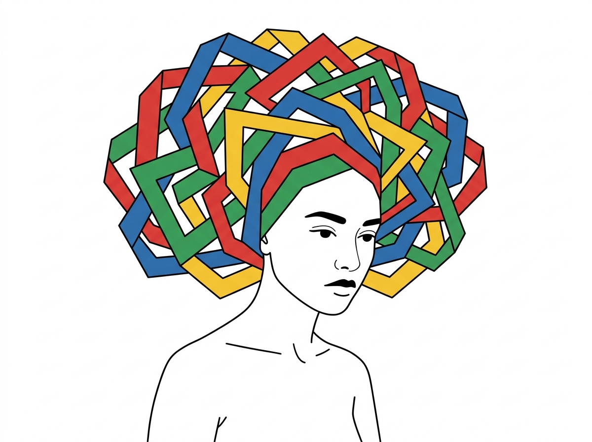
Interlocking Geometric Coif & Stark White Line Art
Stark white facial features with zero gray tones, crowned with flat-color interlocking geometric ribbon bands (red, blue, green, yellow) with no interior outlines.
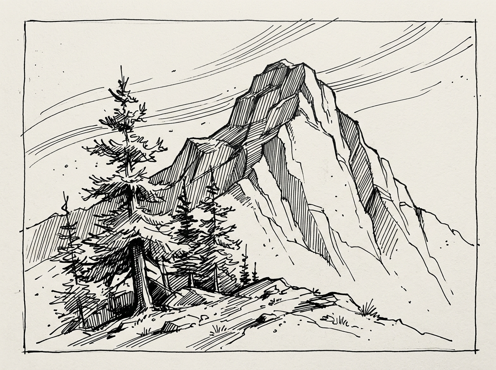
Disciplined Directional Parallel Hatching
Sharp draftsmanship with clean parallel hatching reserved strictly for shadow planes, crisp white lit surfaces, and zero muddy smudging.
1. Line Weight, Thickness Modulation & Stroke Dynamics
The authentic jeff_sketch style is defined by its mark-making methodology:
1. Line Hierarchy & Thickness Modulation:
• Primary Boundary Contours (Bold / Heavy): Thick, confident black ink strokes that ground the silhouette and define primary structural boundaries.
• Internal Structural Lines (Medium): Fluid, unbroken single-stroke paths defining internal planes without over-drawing.
• Hairline Accents (Fine / Delicate): Extremely sparse, light pen marks used strictly where necessary.
2. Line Economy ("Less is More"): Forms are resolved with the absolute minimum number of strokes needed. Unbroken, sweeping continuous contours with decisive angles and organic transitions replace cluttered scratching.
3. Negative Space as Active Form: Stark, clean, unshaded white paper. Unfilled white space carries equal compositional weight as the black ink marks.
4. Hatching & Shadowing Discipline:
• Directional Parallel Hatching: Clean, evenly spaced parallel linework for shadow planes—never smudged, smeared, or blended into photorealistic graphite gradients.
• Solid Black Blocking: High-contrast flat black fill blocks placed strategically for structural anchor and graphic punch.
• Unshaded Planes: Lit surfaces and primary feature planes remain pristine white paper with zero internal cross-hatching.
Corpus Training Pool References (Examining Stroke & Color Dynamics):
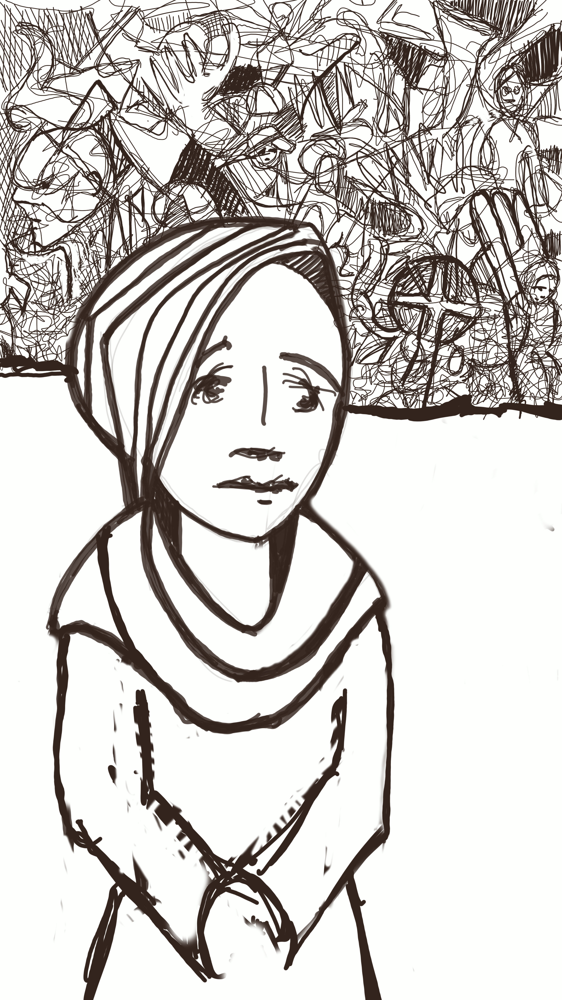
Contour Flow vs. Energetic Line
Juxtaposition of clean single-stroke outer contour with high-velocity expressive scribble linework.
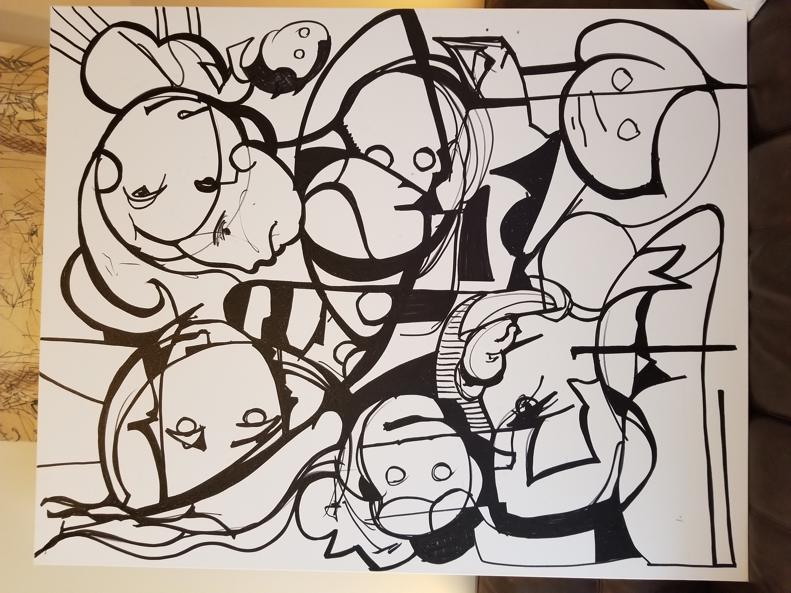
Continuous Line & Solid Blocks
Heavy black boundary strokes, unbroken continuous line flow, and flat black geometric contrast blocks.
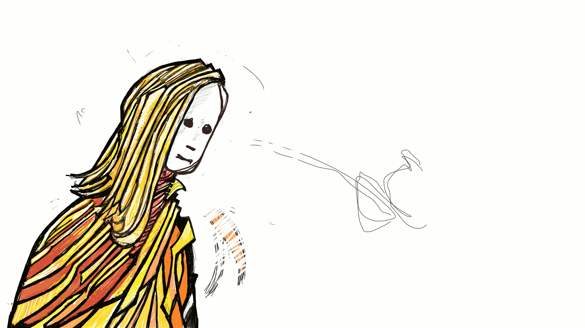
Extreme Line Economy
Sweeping fluid contours, minimalist single-line features, and 85%+ untouched clean white paper.
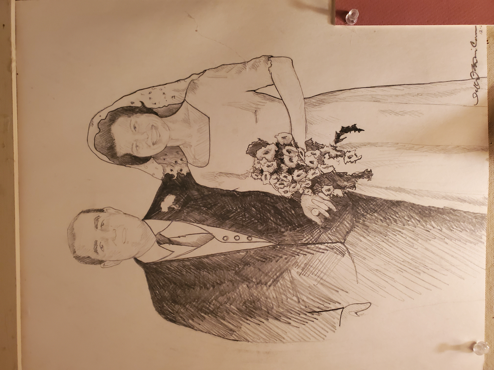
Directional Parallel Hatching
Selective parallel pencil hatching used strictly on shadow planes while primary forms remain pristine white.
2. Prompt Engineering Vocabulary: Mark-Making & Line Control
To control the line architecture across any subject (objects, nature, architecture, figures), use these line-specific positive and negative keyword sets:
| Category | Recommended Token Set |
|---|---|
| Line & Stroke Tokens (Positive) | bold clean black ink contour lines stark white features zero shading or grey tones solid black features interwoven interlocking zig-zagging geometric bands flat solid unshaded colors of red blue green and yellow no outlines on interior colored shapes disciplined directional parallel hatching pure white negative space high contrast flat-design line art |
| Mark-Making Errors to Suppress (Negative) | photorealistic 3D shading blended graphite smudging grey gradients muddy tones hyper-dense cross-hatching across lit surfaces clutter micro-stippling comic book muscular anatomy |
3. Subject-Agnostic Line & Hatching Formulas
Apply these formulas to any subject by inserting your desired subject or metaphor into the prompt:
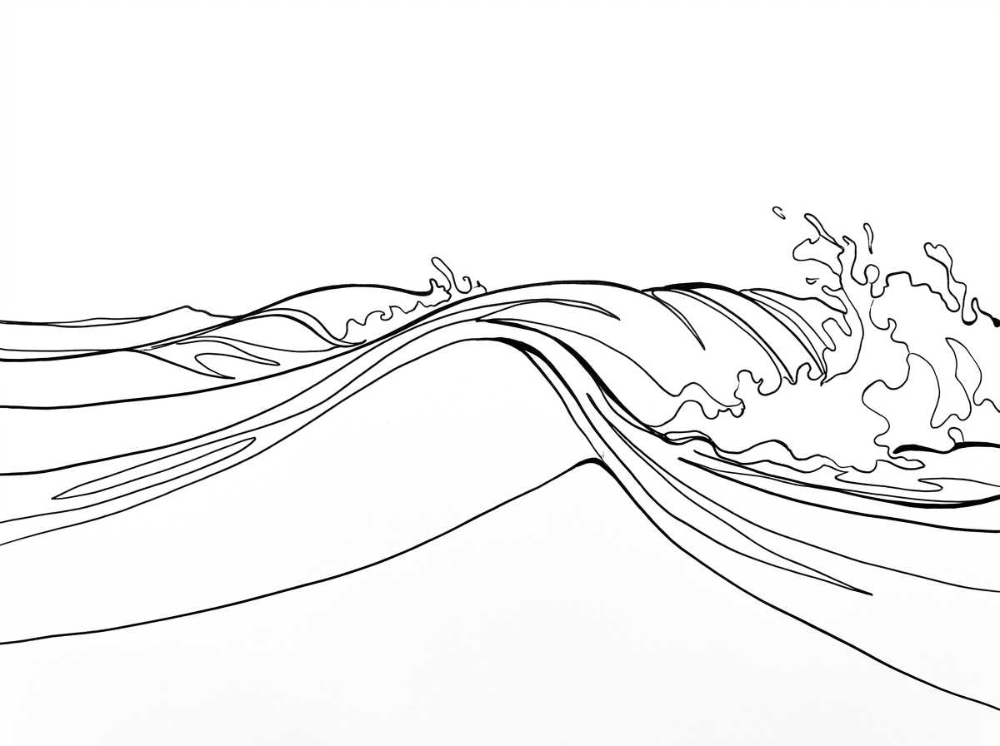
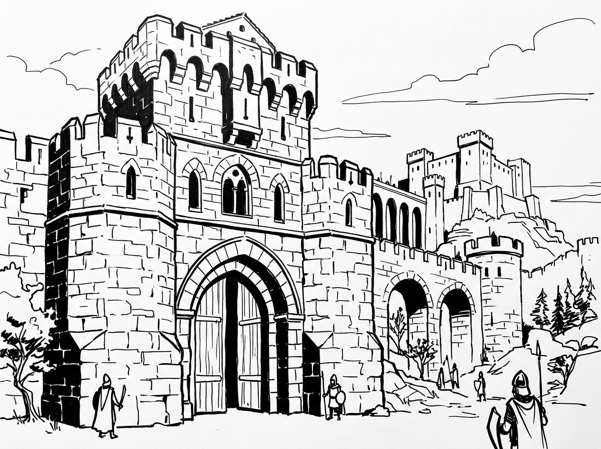
4. Visual-DAGR Architecture (Distillation · Augment · Generation · Review/Refine)
To eliminate single-pass AI prompt compression and achieve 100% reproducible authentic line economy across any foundation model, we operationalize the DAGR runtime architecture from the AETHER/AEC specification (S06_DAGR_METHOD.md) for visual media generation:
Visual-DAGR Stage-by-Stage Operational Map
1. Distill (Deterministic · <0.1ms): Extracts core structure from source lesson JSON (behavioral intent, physical metaphor, anchor entities, format constraints) without LLM calls.
2. Augment (Mechanical Grammar & Staging): Injects mark-making rules (fountain pen ink, zero shading, 40% asymmetric line weight), negative suppression tokens, and multi-tier spatial depth staging.
3. Generate (Base Structural Canvas): Executes the single generative call to establish subject silhouette and composition (Pass 1).
4. Review / Refine (Accountability & Distillation Loops): Chains deterministic image-to-image refinement passes to strip interior clutter (Loop A) and calibrate line-weight asymmetry (Loop B).
Universal Model Portability:
A fresh foundation model session (e.g. Gemini outside this local environment) does not inherently know the fine-tuned token jeff_sketch style. This Visual-DAGR sequence relies purely on explicit mechanical line physics, ensuring 100% reproducible results on any AI model.
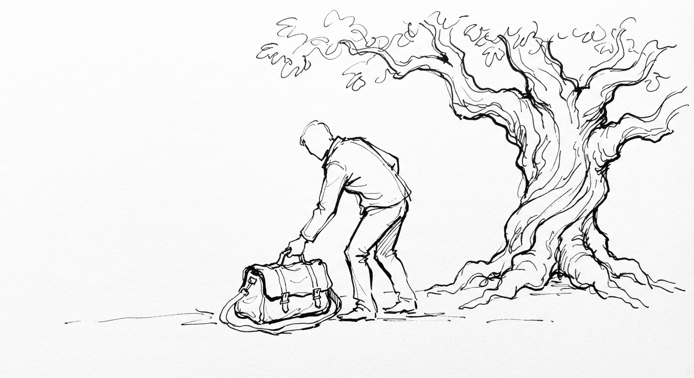
1. Base Composition
Establishes main subject and foreground anchor with clean fountain pen strokes.
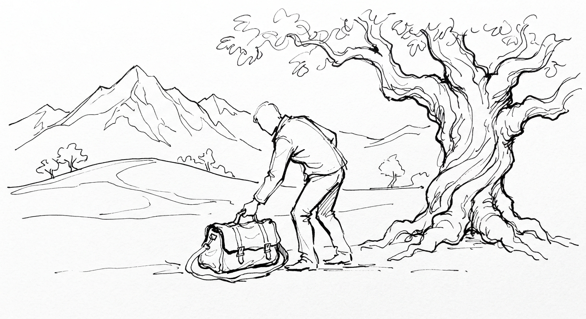
2. Environmental Depth
Introduces multi-tiered background landscape elements while strictly forbidding shading.
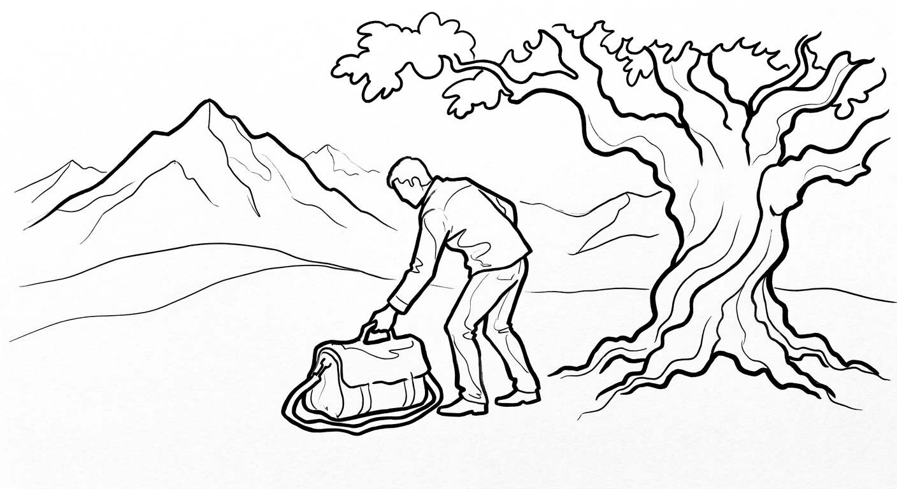
3. Strip Interior Lines
Carves away micro-hatching and interior clutter, locking down pure perimeter contours.
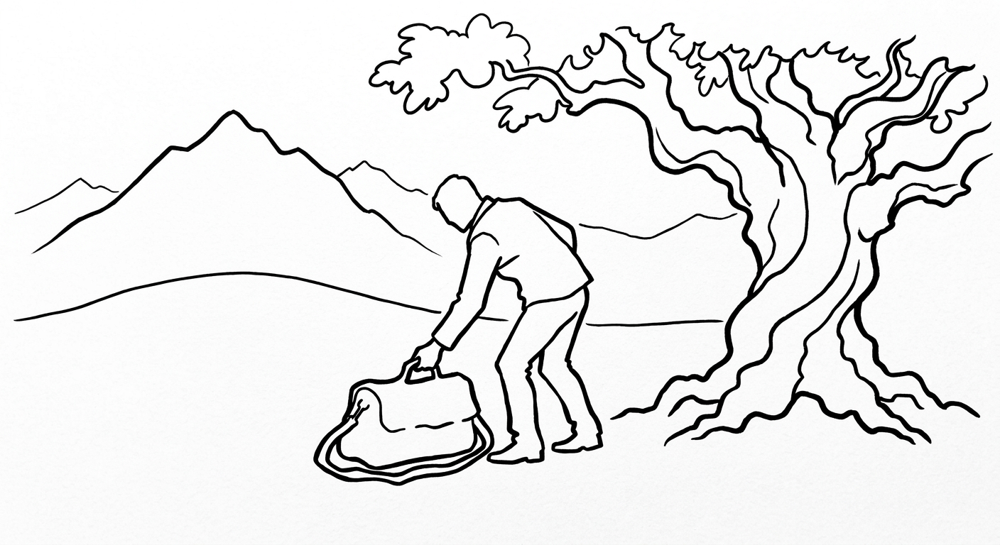
4. Line Weight Asymmetry
Selectively thins secondary lines by 50% to produce natural calligraphic hand variation.
3-Step Landscape Procedural Line-Styling Chain
Demonstrating the exact 3-step Review/Refine sequence applied to natural landscape forms (mountain & pine trees), transforming dense graphite sketches into calligraphic ink masters:


5. Universal Raster-to-Ink "Humanizer" Stylization Engine (The Imperfection Engine)
To convert any base raster image (photo, 3D render, structural sketch, or base AI generation) into an authentic hand-drawn fountain pen illustration, we execute this universal single-pass distillation prompt:
The Universal Humanizer Prompt:
"minimalist, hand-drawn black fountain pen illustration on a stark white canvas. Use variable line weights with expressive, imperfect calligraphic strokes to give it a raw, human-drawn quality. Simplify the [SUBJECT/PORTRAIT] by removing 75% of the detailed interior linework, leaving a clean silhouette with stylized features. randomly select 20% of the black ink lines and increase their thickness by 30%. Ensure the final canvas is perfectly clean with no ink splatters, splotches, or background textures. Increase the imperfection and skew the entire canvas to make the entire drawing look fully hand-inked. Imperfection is key."
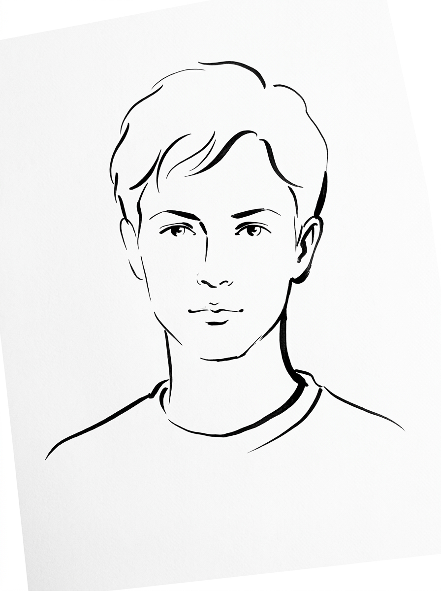
Hand-Inked Human Portrait
75% interior lines stripped, +30% thickness on 20% random contours, subtle organic canvas skew, zero gray smudging, and raw fountain pen line imperfection.
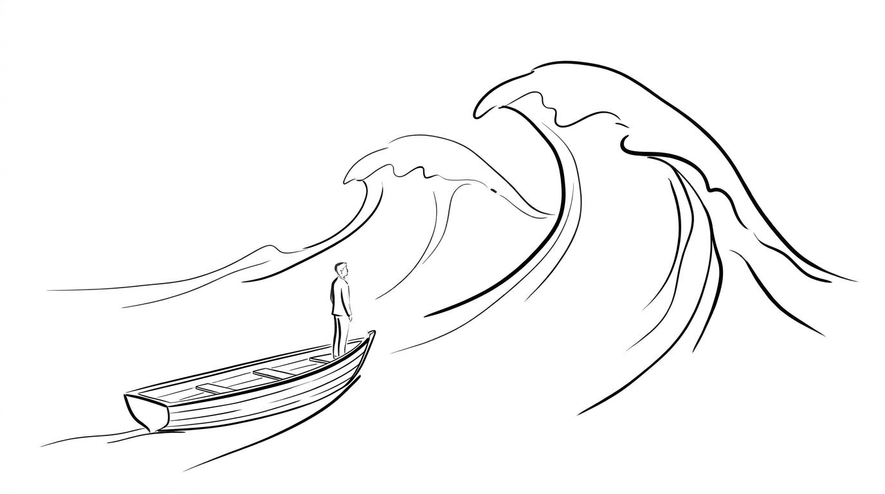
Minimalist Wave Contours
Applied to dynamic marine landscape: isolates primary perimeter wave crests while stripping interior water texture and maintaining pure stark white paper.
1. Density Calibration Presets
Our core test case is Genesis 1:3 ("Speak order and light into chaotic situations"). Depending on the publishing medium (mobile UI headers, print book chapters, or dramatic video reels), we calibrate line density and cross-hatching across three primary presets:
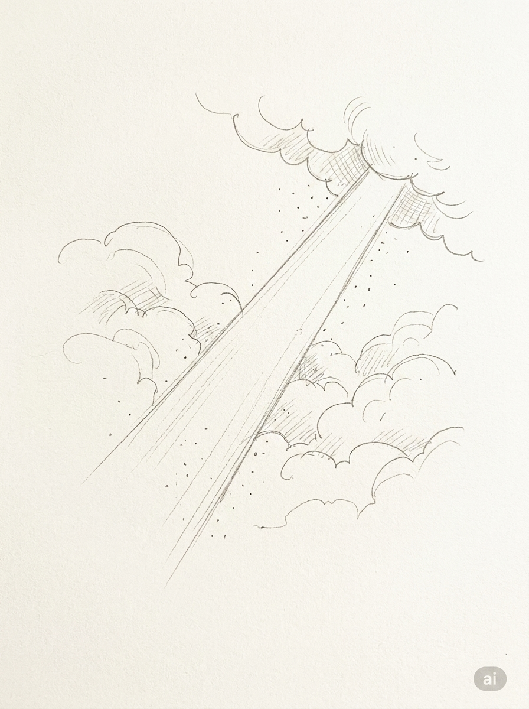
Negative Tokens: dense cross-hatching, heavy scribbles, overworked lines, dark shading, clutter.
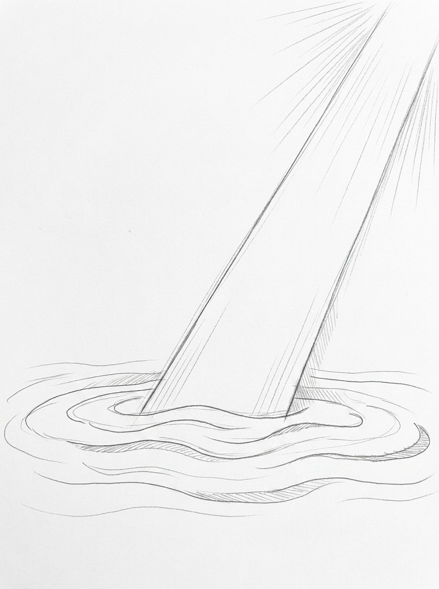
Negative Tokens: pitch black, muddy shading, chaotic scribbles, over-rendered.
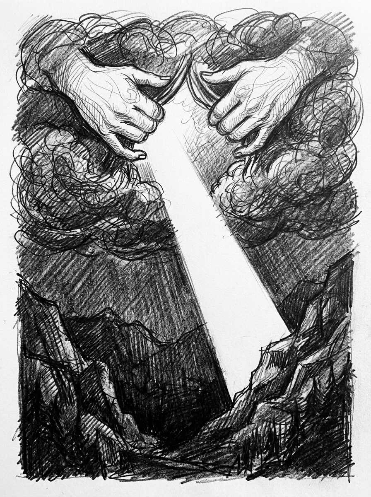
Negative Tokens: washed out, flat lighting, digital vector, cartoon.
2. Photo-to-Sketch (Img2Img) Transformation
You can drop any reference photo (landscape, portrait, architecture, or object) into media/photography/references/ and convert it into a 100% hand-drawn jeff_sketch style drawing while preserving the original composition:
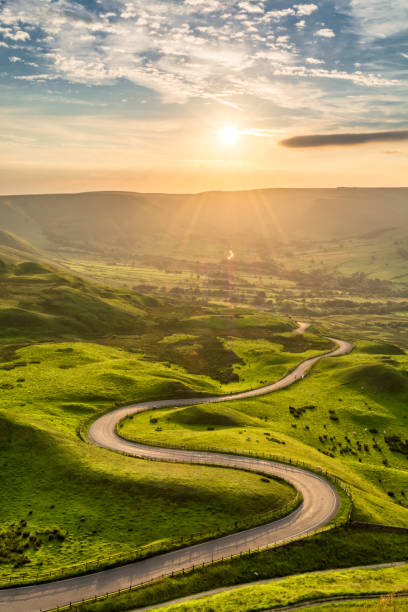
Source Photo Reference
Original aerial photograph of a winding country road through rolling green hills toward a morning sunrise.
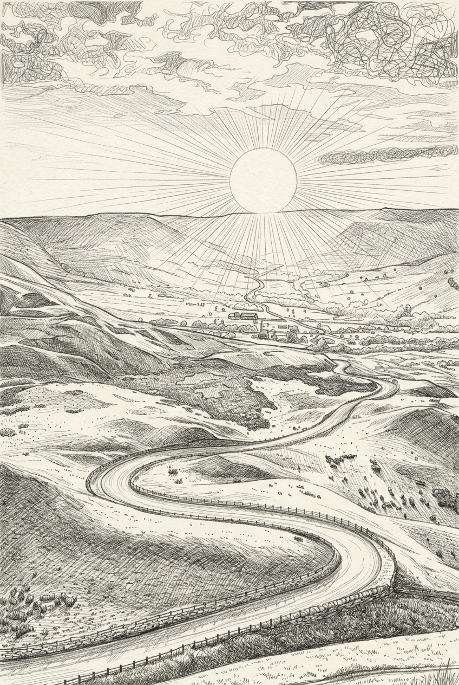
Transformed Hand-Drawn Sketch (jeff_sketch style)
Exact geometry preserved: wooden fence contours, rolling hill slopes translated into graphite cross-hatching, radiating pencil sunbeams, and swirling cloud draftsmanship.
3. Colorizing Original Drawings (100% Line Preservation)
We can take any original black-and-white ink drawing or sketch from your 136-piece dataset and infuse it with rich contemporary palettes while keeping every single original contour line, face, and stroke intact:
Original Black Ink / Marker Drawing (20190203_095926.jpg)
Authentic hand-drawn abstract figurative composition with interconnected faces, bold black contour lines, and raw draftsmanship.
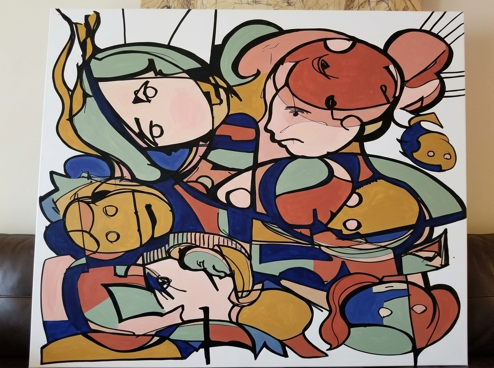
Colorized Contemporary Fine Art
Zero line loss. Filled the segmented figurative zones with a sophisticated matte palette: terracotta, cobalt blue, warm mustard ochre, and soft sage green.
4. Colorization Treatments on Generated Sketches
Even though the training model is rooted in monochrome sketches, the base diffusion engine can inject color washes, tints, and spot accents on top of your structural linework:
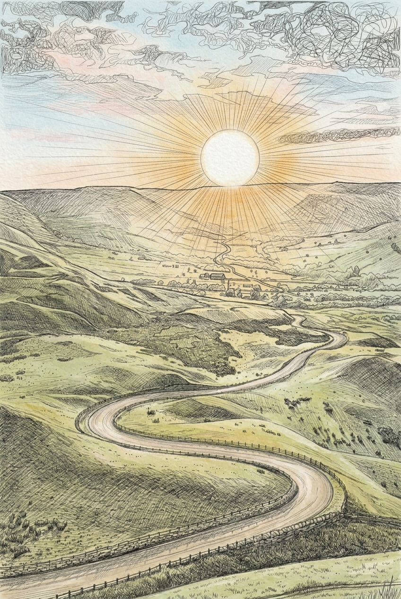
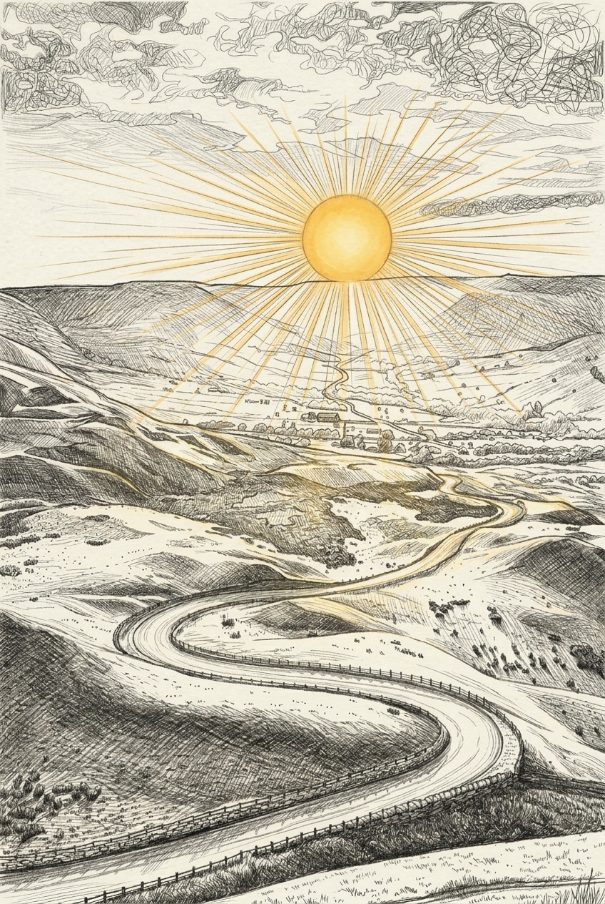
5. Complete Parameter Levers & Prompt Vocabulary
Use these exact prompt keywords to control texture, shading, composition, and media behavior:
| Control Parameter | Target Effect | Key Positive Prompt Tokens | Negative Prompt Tokens |
|---|---|---|---|
| 1. Pencil Weight & Texture | Controls stroke hardness, grain, and graphite texture | fine 2H graphite pencil, soft 4B dark graphite, textured cold-press paper grain, tactile pencil friction, charcoal smudge accents | smooth digital gradient, vector lines, plastic look |
| 2. Shading & Stroke Technique | Defines how shadows and values are rendered | parallel diagonal hatching, intricate 90-degree cross-hatching, gestural scribbled texture, stippled graphite dots, blended stump shading | airbrush, color fill, cell shaded |
| 3. Colorization & Wash | Injects watercolor, spot accents, or gouache tones | soft translucent watercolor wash, line and wash mixed media, matte modern gouache palette (terracotta, cobalt, mustard), selective spot color glow, warm vintage sepia parchment | neon saturation, muddy bleed, oily texture |
| 4. Composition & Negative Space | Governs subject placement, framing, and breathing room | isolated central subject, spacious paper border margin, minimalist vignette, expansive panoramic landscape, dramatic Dutch angle | edge-to-edge clutter, cropped subject, crowded frame |
| 5. Lighting & Chiaroscuro | Directs light source, beam intensity, and shadow depth | single radiant beam of light, dramatic rim lighting, stark volumetric light shaft, soft ambient morning glow, pure white paper highlight core | flat lighting, no shadows, overexposed whiteout |
6. Universal Production Prompt Template
Whenever you request an illustration for a poem, prayer, or study lesson, use this standardized 4-part modular formula:
Standard Master Formula
[TRIGGER WORD] + [SUBJECT & ACTION] + [DENSITY / COLOR PRESET] + [COMPOSITION & LIGHTING] + [TRADITIONAL MEDIUM ANCHORS]
| Use Case | Example Prompt Blueprint |
|---|---|
| For Poems / Prayers (Clean Minimalist) | jeff_sketch style, an old weathered wooden chair beside a rain-streaked window, minimalist open-space sketch, delicate 2H contour linework, sparse hatching, ample white paper background, soft morning reflection, traditional graphite sketch. |
| For Bible Lessons (Balanced Line & Wash) | jeff_sketch style with soft watercolor wash, an ancient shepherd staff resting against a rocky mountain stone under a radiant sunbeam, clean graphite linework, delicate golden amber and sage watercolor bleeds, uncluttered composition, line and wash on paper. |
| For Dramatic Themes / Reels (Spot Color Chiaroscuro) | jeff_sketch style with selective spot color, a powerful wave crashing against a dark cliff under swirling tempest clouds, monochrome black and white cross-hatching, luminous golden amber beam slicing through storm, dramatic high contrast draftsmanship. |
7. Production Pipeline & File Routing
All assets flow through the official 864zeros-publish Media House structure:
- Training Pool:
media/visuals/training_pools/sketches/(136 captioned image pairs) - Trained LoRA Model:
media/visuals/lora_weights/864z_jeff_sketch_v1.safetensors - Reference Photography:
media/photography/references/(Source photos for Img2Img conversion) - Production Artwork:
media/visuals/rendered_art/(All generated PNG/JPG assets) - Poem/Lesson Linkage: Every JSON record in
shared/creative/orshared/bible/can link directly to its corresponding image path.